The frog sage of the low end. Lovecraft's drowned gods, bass music's deepest frequencies, and a road map from two tracks today to a Brooklyn stage in July 2027.
This is the printed edition. Play the glyphs, spin the 3D map and the idol, and hear the bass at gordonusc.github.io/foster-at-55/deep-low-end/
Each glyph plays a different bass sound in the Fangspeare style, sub drops, wobbles, growls, reese, riddim, and opens a piece of lore. Wake all twelve and something rises.
The Eye of R'lyeh dives to 20 Hz, the floor of human hearing. Tsathoggua and the Necronomicon sit on 50 Hz. Old Ones and Wake the Deep hit both. On a club system or good headphones you feel them in your chest; phone speakers can't reach that low, so each one carries a soft overtone you can still hear.
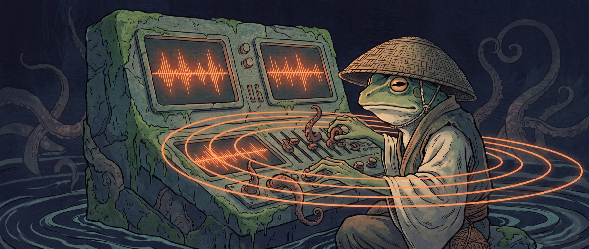
Hold a pad and watch the actual sound wave move. Slide the wavetable from a pure sine to saw, square and a custom Tsathoggua wave. Drive it into distortion, close the filter, and set the wobble. Pitch goes down to 20 Hz for a real subwoofer. Every glyph above shows on this scope too.
Foster started making bass music in 2026. He spent ninety days learning from Ace Aura, the Texas producer known for melodic riddim. He cut Poe Beat (92 BPM, Lars remix) with MC Lars, the pioneer of lit-hop and author of an entire Edgar Allan Poe catalog. He founded a label, Ghost Voltage Records.
In his own words: the EP is "for the fans of HP Lovecraft and dubstep / experimental bass music / wave and the New Romantics." The Fangspeare character "is an inhabitant of the ancient world described in the HP Lovecraft stories," from "a time of civilization before the last Ice Age."
He already has two tracks, Tekeli-li and Old Ones, and a live site at fangspeare.com built on At the Mountains of Madness: Antarctic ice, a Miskatonic Expedition briefing film and track players. Foster describes the site as a synthesizer that lets you build a beat in one tap.
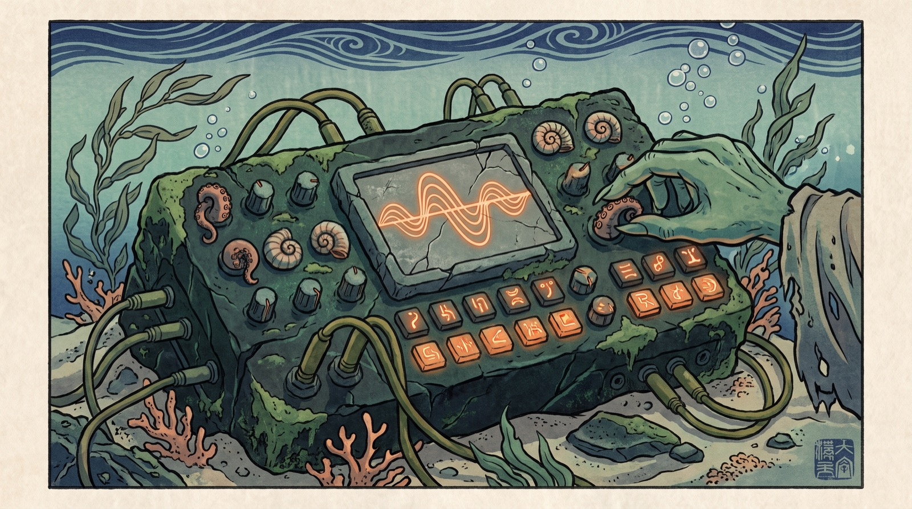
Clark Ashton Smith, Lovecraft's friend and correspondent, created Tsathoggua in "The Tale of Satampra Zeiros" (written 1929, Weird Tales, November 1931): squat, pot-bellied, "his head was more like a monstrous toad than a deity." He sleeps in caverns under Mount Voormithadreth in Hyperborea, a warm northern kingdom buried by the advancing ice sheets of the Pleistocene.
Lovecraft adopted him in "The Mound" and "The Whisperer in Darkness," and named him in At the Mountains of Madness, the very story Foster's site and his track Tekeli-li already draw from. The frog sage and the Antarctic expedition are one world.
Among the Mythos gods, Tsathoggua is the lazy, less malevolent one who holds deep knowledge. That is a sage. A second fit: in "The Doom That Came to Sarnath" (1920) the beings of Ib are green, bulge-eyed and voiceless. Fangspeare gives them a voice, and it is all bass.
Public domain note "The Whisperer in Darkness" (August 1931) enters the US public domain on January 1, 2027, and Smith's Tsathoggua story likely does too. A July 2027 show lands in Tsathoggua's first public-domain summer. Rights to At the Mountains of Madness depend on the edition: Project Gutenberg treats the 1936 magazine text as US public domain with no renewal found, but later editions, illustrations and adaptations can carry their own rights. Check the specific edition before quoting at length.
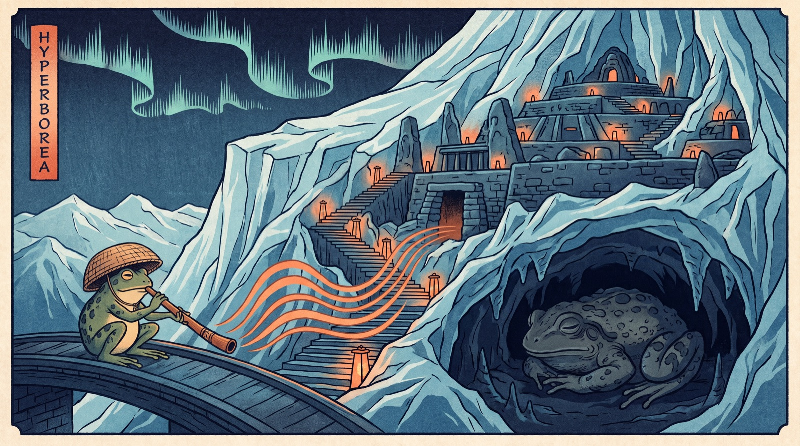
Lovecraft has haunted heavy and electronic music for forty years, and the low end is how he gets in. Plenty of bass tracks borrow a Mythos title. Almost nobody has built a whole character world on it. That lane is open.
Real releases, checked against store listings. Use them for reference listening, DJ sets and label targets. Crowsnest Audio and Muti Music are the two labels that keep returning to the Mythos.
| Artist | Track | Year · label | Style |
|---|---|---|---|
| INHUMAN | The Lovecraftian Horrors (album: Cthulhu, Dagon, Dunwich, From Beyond, The Lurking Fear; features Subtronics) | 2017 · Crowsnest Audio | Dubstep |
| Cthulhu Basscraft | R'lyeh, Fhtagn, Necronomicon EP | 2018 to 2019 · Muti Music | Halftime, dubstep |
| ill.Gates ft. Mr. Bill and more | Cthulhu | 2018 · Muti Music | Bass |
| Dubloadz | Necronomicon | 2019 · Never Say Die: Black Label | Riddim |
| Marauda | CTHULHU | 2019 · Malignant Music | Deathstep |
| Sick Boy & Zomdrack | Shoggoth | 2022 · Blasphemy | Dubstep |
| RUSHKID | Yog Sothoth | 2018 · Poltergeist | Dubstep |
| Kadath | Cult of the Old Ones | 2020 · Biophaze | Bass |
| SPECTRON | Mountains of Madness (album: The Shadow Out of Time) | 2017 · Monochrome | Drum and bass |
| Syk2ne | The Elder Things / Yuggoth | 2018 · Sonic Terror | Neurofunk |
| Activ | Miskatonic Valley | 2022 · Heart Twice | Drum and bass |
| Modeselektor | Cthulhu Drums | 2021 · Monkeytown | Bass, 140 BPM |
| deadmau5 | Cthulhu Sleeps; Rlyehs Lament (2014) | 2010 · mau5trap | Progressive |
Where Fangspeare is different: his two tracks already sit inside one story (At the Mountains of Madness), with a character, a site that is an instrument, and a label. INHUMAN made a concept album; nobody has made a character. And underneath it all is real science: in a 2003 concert experiment, pieces laced with hidden 17 Hz infrasound drew about 22 percent more reports of unusual experiences, from unease and chills to calm. It does not prove bass equals horror, but it shows the low end moves people below hearing.
Lovecraft was openly racist. His 1912 poem about the creation of Black people is quoted in the first episode of Lovecraft Country, and many of his monsters stand for his fear of immigrants and of mixing. The World Fantasy Award retired his bust after 2015, after a push led by Nnedi Okorafor and Daniel José Older.
The strongest Mythos work now talks back. Victor LaValle's The Ballad of Black Tom (2016) rewrites "The Horror at Red Hook" through a Black Harlem musician. Ruthanna Emrys's Winter Tide recasts the people of Innsmouth as survivors of persecution, with queer found family at its center.
In electronic music, Detroit's Drexciya imagined an undersea nation born of pregnant African women thrown from slave ships: the same deep ocean as Innsmouth, told from inside. Sun Ra and Moor Mother's Black Quantum Futurism offer cosmologies of space and time that answer Lovecraft's void.
For Fangspeare: the frog sage is the one who lives down there, the hero of the deep, not the thing to fear. Telling it that way keeps the dread and drops the bigotry.
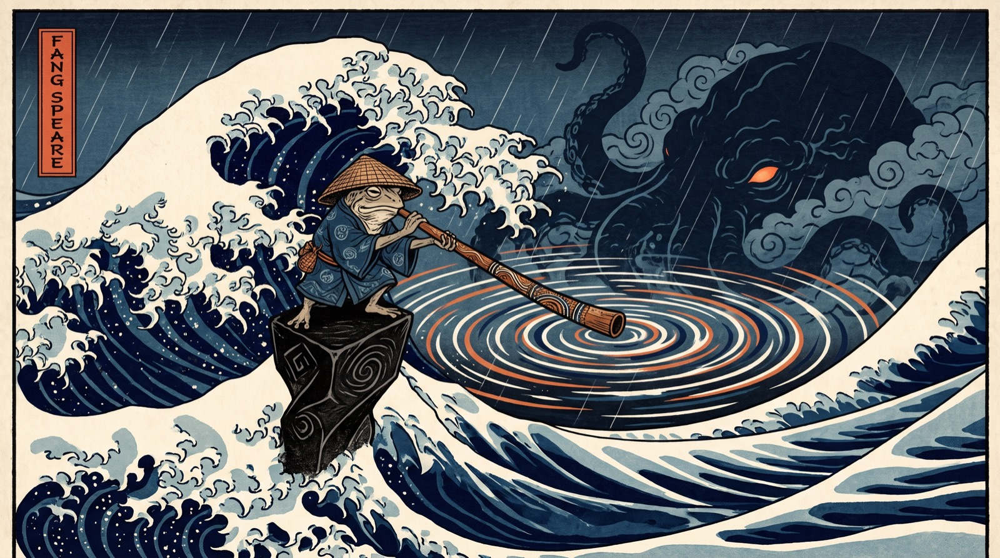
Drag to spin. Big stars are labeled; tap any star for what it is and why it matters. Green stars are the Lovecraft world, orange stars are the bass world, white stars are where they already touch. Fangspeare sits in the middle.
Checked October 13. Searching "fang speare" with a space returns the Valheim weapon "Fang Spear," which is exactly why he chose FANGSPEARE as one word. Everything below is fixable in an afternoon.
| Place | What exists | Next move |
|---|---|---|
| fangspeare.com | Live since Sept 15. Good metadata, MusicGroup data for Tekeli-li and Old Ones, sitemap. Mostly script, little readable text. | Add 200 words of plain text; link every profile; submit to Google Search Console. |
| Name spelling | FANGSPEARE, one word, chosen on purpose: the two-word "Fang Speare" collides with Primal search results. | Use FANGSPEARE on every profile, release and tag. |
| Bandcamp | Closed by Foster in October 2026. | Focus on the major platforms below. |
| Spotify, Apple, Amazon, Deezer | No artist profiles yet. | Release through one distributor (DistroKid, TuneCore or CD Baby), then claim each "for Artists" profile. |
| YouTube | @fangspeare, 2 subscribers. | Post the Miskatonic briefing film and a 30-second visualizer per track. |
| @fangspeare, 1 post. | Weekly frog posts, same palette, same hat. | |
| TikTok | @fangspeare, 0 videos. | Short "press the glyph" sound-design clips. |
| Ghost Voltage Records | Squarespace placeholder with noindex (hidden from search). | Remove noindex; one page linking to Fangspeare. |
| SoundCloud | Live as FANGSPEARE (Foster, October 2026). | Link it from fangspeare.com and post each release there the day it goes live. |
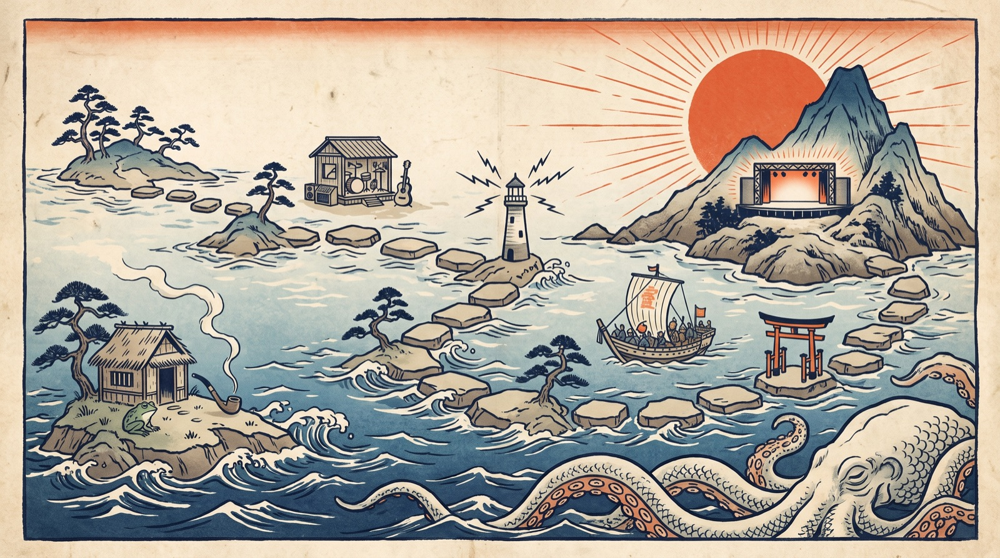
FANGSPEARE everywhere. Profiles linked from the site. Search Console. SoundCloud claimed. Ghost Voltage Records page visible. A short bio: "Lovecraftian bass from before the Ice Age."
First single on Spotify, Apple, Amazon, Deezer and SoundCloud, pitched to Spotify editors before release day. A 30-second visualizer with the frog in the ice. Send it to MC Lars and Ace Aura to share, which gives the site its first real links.
Give fangspeare.com an easy mode: one big button that plays a satisfying drop, with the full synth behind it for people who want to go deeper. This is the shareable thing.
Old Ones, Tekeli-li, plus tracks for Hyperborea, R'lyeh and Sarnath. A map of the world you listen to in order. Release in April with a run of short films.
Lock a July date and venue (see the production plan below). Small, loud, friends first.
Rehearse a 45-minute hybrid set on Push 3. Play two practice nights for friends at home or a tiny bar. Build the visuals.
The birthday-week show in Brooklyn. The frog on the screen, the subs in the floor, the people who love him in the room.
Target: a Friday or Saturday in the week of July 18, 2027, his 56th birthday. A 150 to 260 capacity room, a 45-minute headline set with two friends' sets before it, the Fangspeare world on a screen behind him.
| Room | Capacity | Why | Booking |
|---|---|---|---|
| Elsewhere, Zone One (Bushwick) | 260 | Built for emerging artists, serious sound, bass-friendly crowd. | Private events form; price on inquiry |
| Le Poisson Rouge, Gallery Bar | 150 | Birthday scale, Village location, host keeps ticket revenue. | events@lprnyc.com; room fee plus F&B |
| Elsewhere, Hall | 750 | The stretch goal if friends-of-friends turn out. | Same form |
| Line | Range | Notes |
|---|---|---|
| Room rental or minimum spend | $2,500 to $15,000 | Small-room NYC buyouts list from about $2.5K; bigger rooms carry food and drink minimums. |
| Sub reinforcement | $800 to $3,000 | Only if the house system lacks enough sub. Ask for the spec sheet first. |
| Visuals software | €299 to €799 | Resolume Avenue or Arena, one-time license. TouchDesigner has a free non-commercial tier. |
| VJ for the night | $500 to $2,000 | Estimate. He can also run pre-built clips himself. |
| Controller | about $2,000 | Ableton Push 3 standalone runs his set with no laptop. He may already own gear. |
| Photo and video | $600 to $1,500 | Estimate. The footage becomes next year's promo. |
| Event insurance | $200 to $600 | Estimate; venues usually require a certificate. |
| Merch (frog pins, posters) | $300 to $1,000 | Estimate. Give them away to the first 100. |
He already loves the room. Gordon took him to Ultra and he ran past him. He chose Zeds Dead backstage for his own birthday. The best part of a bass show for him is the moment the drop lands and a crowd moves together. On stage he gets to cause that moment.
A hybrid set takes the fear out. His tracks are the backbone. He plays the effects, the filters and the drops live. If anything slips, the music keeps going.
Friends first. The first show is for people who already love him. That turns nerves into a party.
He gets to be the character. A basket hat, a frog mask for the intro, the sage on the screen. Performers who play a persona often say it frees them. Fangspeare is a costume he already designed.
He likes to debate the drop. He and Gordon argue about drops at midnight. Live, he hears the answer instantly, from the floor.
It is a mentor's gift back. He has always backed the people around him. A show lets him do that for a whole room: show up, take a risk, make it look possible.
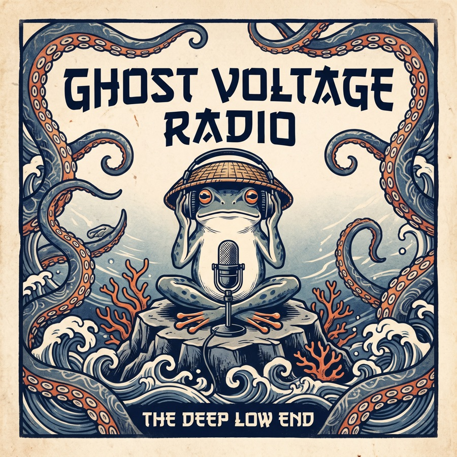
A four-minute, two-host episode about Fangspeare, the frog god, Cthulhu and the road map, with his own Poe Beat as the intro and outro.
A 3D toad idol on a tilted monolith. Drag to turn it. It is ready to drop into visuals, a site header or a stage screen.
Loading the idol…
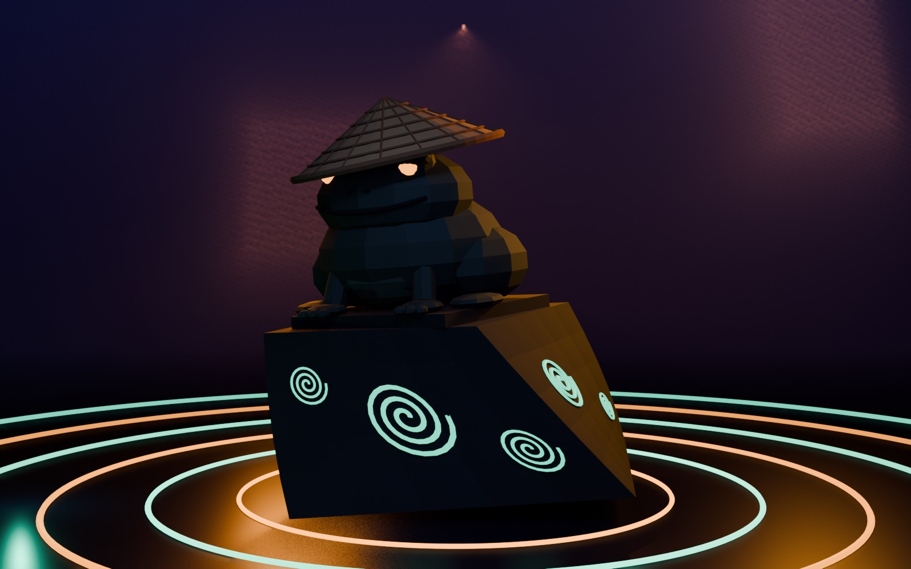
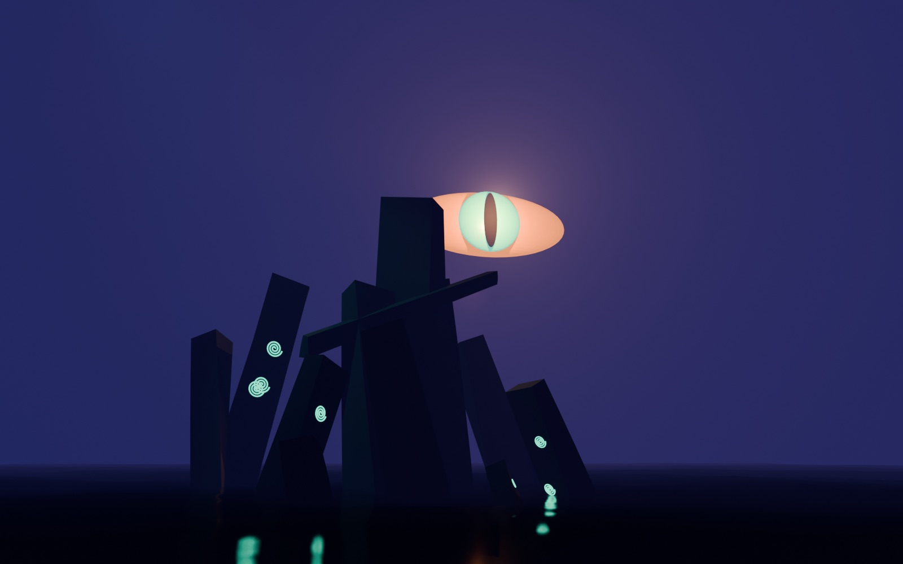
Three designs, editable in Canva: a teaser post, a podcast story and a flyer for the July show.
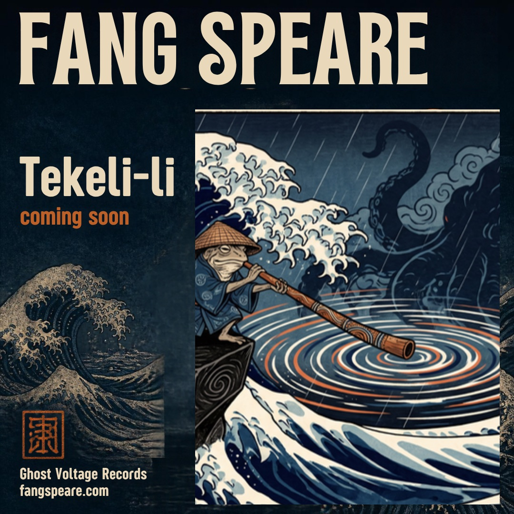
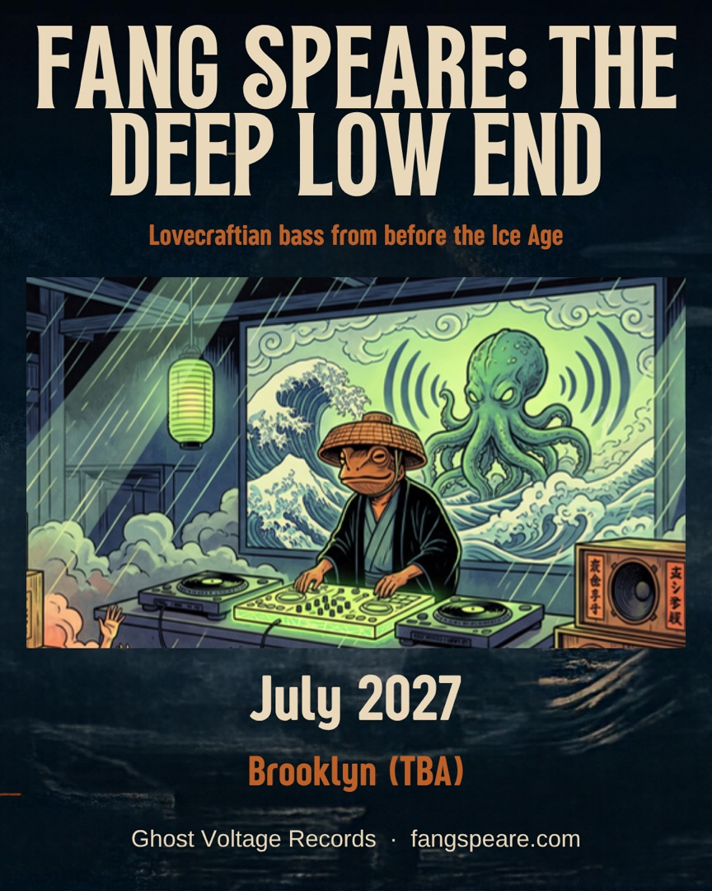
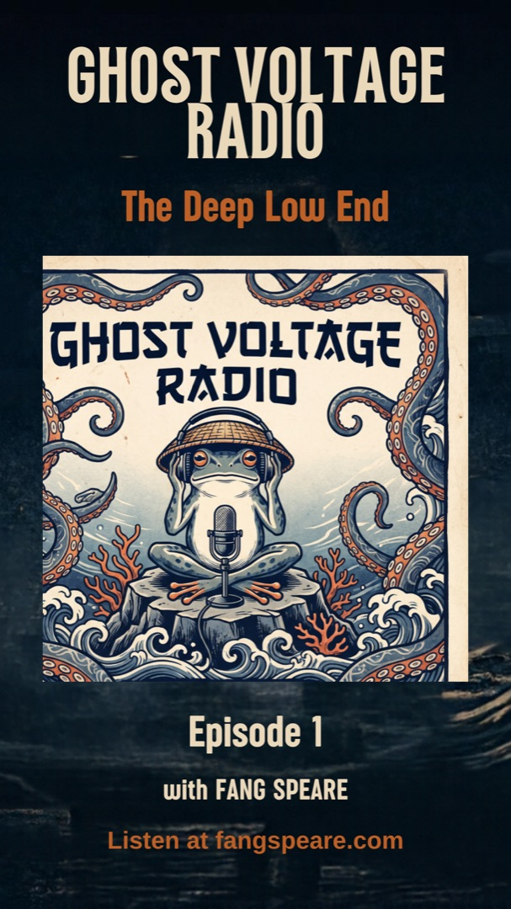
All twelve glyphs are awake. In his house at R'lyeh, the frog sage plays, and the old gods dance. See you on the floor in July.